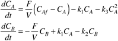
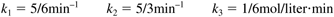
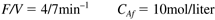
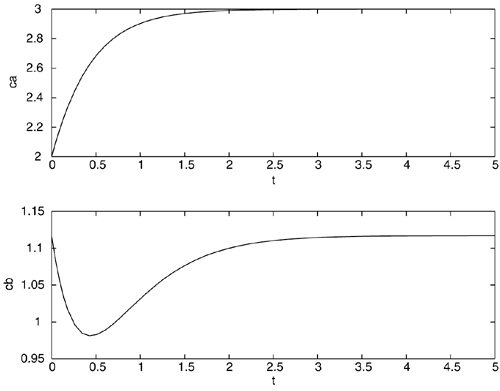

| [ Team LiB ] |
|
M3.1 MATLAB ode—BasicMATLAB has several different routines for numerical integration; all use the same basic call statements:
[t,x]= ode45('xprime',tspan,x0) % nonstiff, medium order
[t,x]= ode23('xprime',tspan,x0) % nonstiff, low order
[t,x]= ode113('xprime',tspan,x0) % nonstiff, variable order
[t,x]= ode15s('xprime',tspan,x0) % stiff, variable order
[t,x]= ode23s('xprime',tspan,x0) % stiff, low order
[t,x]= ode23t('xprime',tspan,x0) % moderately stiff, trapezoidal
[t,x]= ode23tb('xprime',tspan,x0) % stiff, low order
ode45 uses fourth-order and ode23 uses second-order Runge-Kutta integration. All routines use a variable integration step size (Dt is not constant). The integration step size is adjusted by the routine to provide the necessary accuracy, without taking too much computation time. To use these routines, the user must first generate an m-file to evaluate the state variable derivatives. The m-file must be named 'xprime.m', and contain the following statement in the first line of the file function xdot = xprime(t,x); where 'xprime' is the name of the function routine (usually selected as something meaningfully related to the system of equations), 'xdot' is the vector of time derivatives of the states, 't' is time, and 'x' is the vector of states. 'xdot' must be generated as a column vector. The command given to perform the integration is
[t,x]= solver('xprime',tspan,x0)
where
The arrays that are returned are
For example, if the time vector has 50 elements and there are three state variables, then the state variable vector has the 50 rows and three columns. After the integration is performed, if the student wishes to plot all three variables as a function of time, she/he simply enters plot(t,x) If you only want to plot the second state variable, then the command plot(t,x(2,:)) is given. Example M3.1: Van de Vusse ReactionConsider the following set of differential equations that describe the van de Vusse reaction scheme in an isothermal, CSTR.  The parameter values are  The input values used in the following simulation are  The differential equations are placed in a file named vdv_ode.m function xdot = vdv_ode(t,x); % % Solves the two differential equations modeling % the van de vusse reaction % scheme in an isothermal CSTR. The states are the concentration % of A and B in the reactor. % % [t,x] = ode45(vdv_ode,[0 5],x0) % integrates from t = 0 to t = 5 min, with initial conditions % ca0 = x0(1) and cb0 = x0(2), and x0 is a column vector % 16 Jan 99 % b.w. bequette % % since the states are passed to this routine in the x vector, % convert to natural notation ca = x(1); cb = x(2); % the parameters are: k1 = 5/6; % rate constant for A-->B (min^-1) k2 = 5/3; % rate constant for B-->C (min^-1) k3 = 1/6; % rate constant for 2A-->D (mol/(l min)) % the input values are: fov = 4/7; % dilution rate (min^-1) caf = 10; % mol/l % the modeling equations are: dcadt = fov*(caf-ca) - k1*ca –k3*ca*ca; dcbdt = -fov*cb + k1*ca – k2*cb; % now, create the column vector of state derivatives xdot = [dcadt;dcbdt]; % end of file In the MATLAB command window, enter the initial conditions and run ode45
» x0 = [2;1.117]
» [t,x] = ode45('vdv_ode',[0 5],x0);
» subplot(2,1,1),plot(t,x(:,1)), xlabel('t'), ylabel('ca')
» subplot(2,1,2),plot(t,x(:,2)), xlabel('t'), ylabel('cb')
The plots are shown in Figure M3-1. Notice that the system converges to the steady-state values of CA=3, CB=1.117. Figure M3-1. Transient response to initial conditions perturbed from the steady-state values, CA(0) = 2, CB(0) = 1.117. |
| [ Team LiB ] |
|